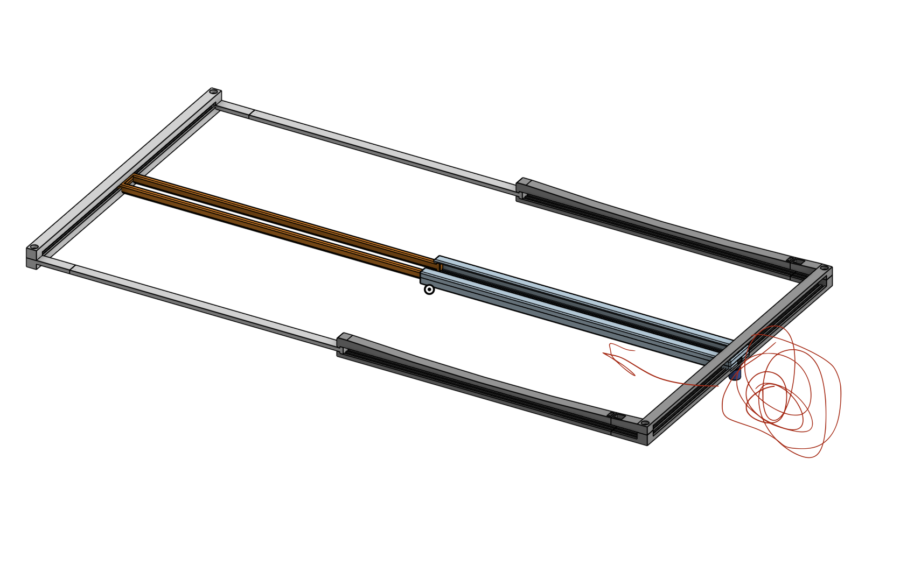

The first prototype: an ESP-32 powered device with a Time-of-Flight sensor that measures per-line reading speed for students learning Braille.
Overview
Version 1 is a physical device that a student places at the start of each Braille line. A line blocker guides finger placement during reading, and a start button initiates the timing session.
An ESP-32 microcontroller paired with a VL53L1X Time-of-Flight sensor moves with the line reader and detects when the student's finger is within a set proximity threshold — marking the completion of each line. Speed is measured over the whole line (e.g., Line 1 read in X seconds) and uploaded wirelessly to Google Sheets.

How It Works
V1 captures per-line timing through proximity detection — the sensor moves with the line reader so the student reads uninterrupted.
Hardware
| Component | Details |
|---|---|
| Microcontroller | ESP-32 |
| Sensor | VL53L1X Time-of-Flight — proximity detection |
| User Input | Physical start button to begin session |
| Reading Aid | Line blocker for consistent finger placement |
| Frame | 3D-printed in OnShape CAD; fits all standard paper sizes |
| Power | Battery pack |
| Speed Metric | Per-line time, converted via 40 chars/line convention |
| Data Output | CSV → Wi-Fi hotspot → Google Sheets |
What We Learned
After testing V1 with students at the California School for the Blind, we found that the line blocker disrupted natural reading position. Braille readers rely on consistent tactile feedback and unobstructed hand movement — any physical guide that altered their natural posture introduced errors and slowed reading. The line blocker was removed entirely in Version 2.
During sessions, the Braille paper would shift on the surface, introducing timing inconsistencies. Version 2 addressed this with a non-slip mat to keep the page stationary throughout the reading session.